Meet the Volunteers
The people behind Social Media, Project, and Runners - the three teams making big happen.
Coordinator
Oversees all teams and helps keep big running as one coordinated effort.
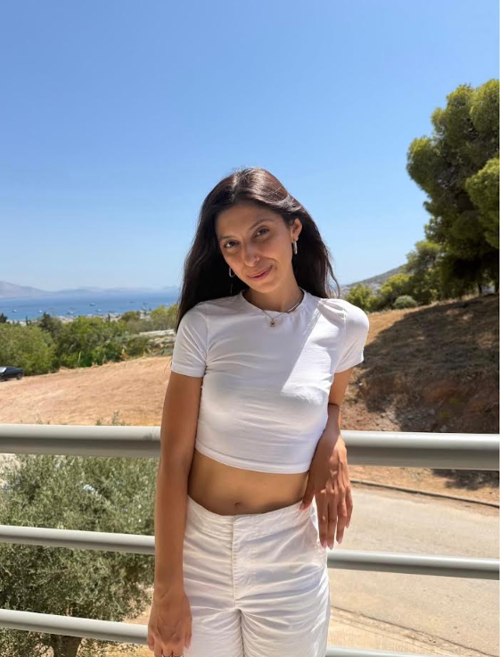
A molecular biologist pursuing a PhD in bioinformatics. Fascinated by microbial communities and protein structures. Perpetually debating logos and symmetry with her supervisor.
Project Team
Designs the activities built specifically for students - "Meet the Speaker," workshops, and networking.
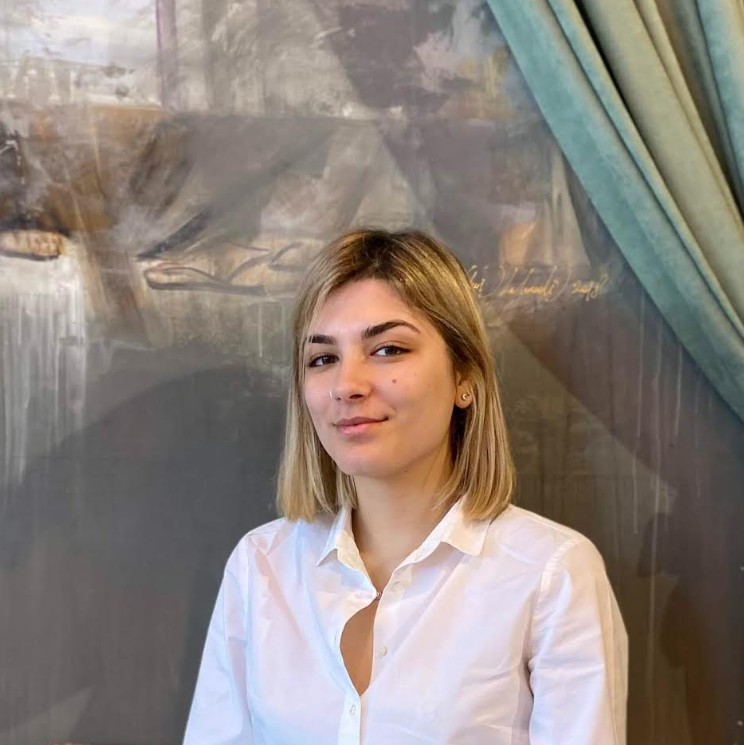
I'm a pharmacist currently pursuing a Master's degree in Molecular Biomedicine! At the moment, I'm doing my thesis in the Pavlopoulos' Lab, while trying to decide whether my future holds a PhD in bioinformatics… or a career as a swing dancer.
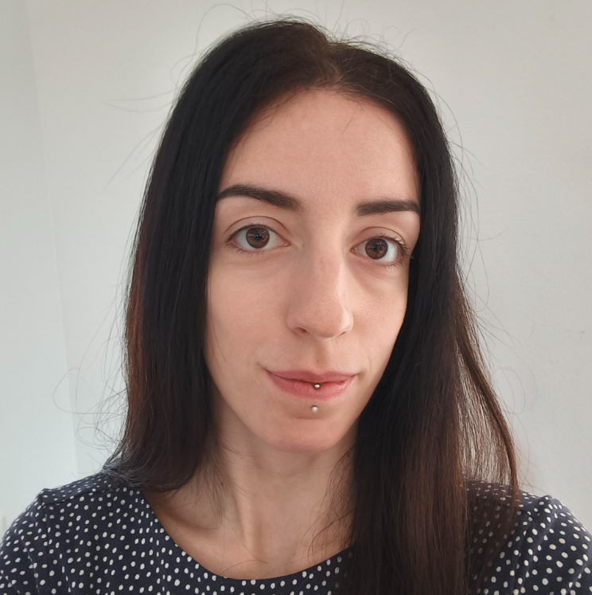
Ms. Zormpa holds an MSci in Applied Biology and Biotechnology from the Agricultural University of Athens, with experience in genetic analysis and bioinformatics, particularly in Ankylosing Spondylitis research. She is currently completing her master's degree in Molecular Biopathology at the National and Kapodistrian University of Athens, where she developed reproducible scRNAseq analysis workflows and a web application for interactive data exploration. Her research focuses on bioinformatic approaches to target discovery and disease characterization, with broader interests in disease modeling, systems biology, and integrative computational tools.
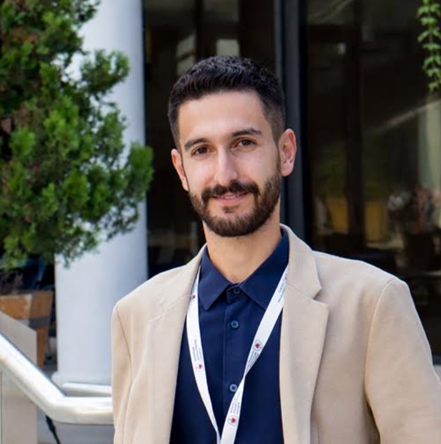
Experience in building scalable, cross-platform solutions, specializing in bioinformatics and digital health platforms. Specialized in full-stack architecture with expertise in processing complex biological data and deploying machine learning models.
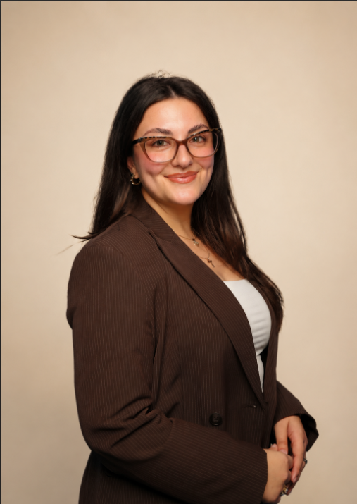
I’m Lia, a Marketing & Events professional and I just completed my MSc in Economic and Business Strategy. I’m passionate about innovation, communication and discovering how different industries shape the future. Joining the BioInnovation Forum felt like the perfect opportunity to step outside my usual field, meet inspiring people and explore the world of bioinnovation. When I’m not working or studying, I’m probably planning an event, starting a new project or convincing myself that my to-do list is actually manageable.
Runners
On-site during the forum itself - handling whatever comes up in the moment.
Social Media Team
Tells the story of the forum in creative ways - social media, outreach to universities, and content production.
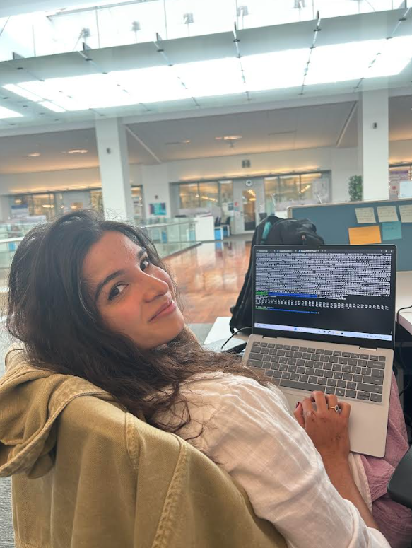
Bioinformatician exploring life through metagenomes and microbiomes, secretly wants to be a diver.
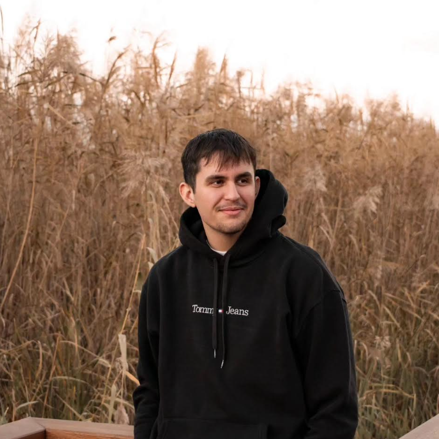
A biologist with an interest in bioinformatics, computational biology, and the application of artificial intelligence in the health sciences. I have experience in biomedical data analysis and a particular interest in bridging biology with modern computational methods. In addition, I am passionate about basketball and sports, which are an important part of my everyday life.
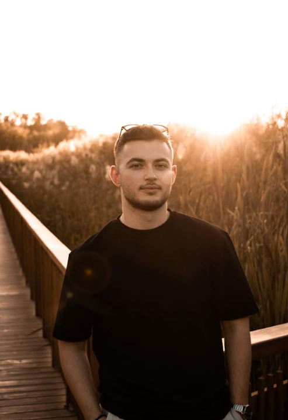
I am a Biology graduate, currently pursuing my MSc in Bioinformatics. I tend to be curious about biology, informatics and technology, and always interested in their intersection. Just don't give me too many math problems! Really excited to be a part of the BioInnovation Forum Team!
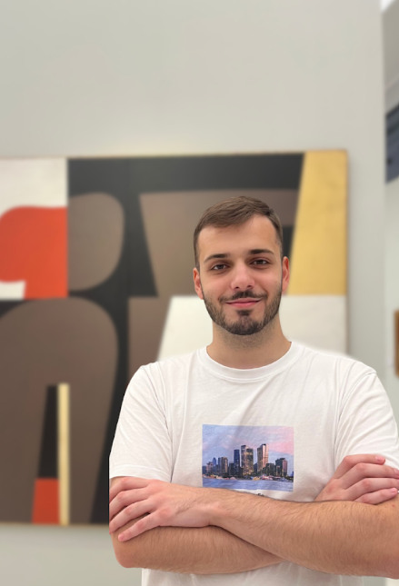
Panagiotis seeks to understand how microbes shape the eukaryotic world by studying bacteria with insecticidal properties. As coordinator of the Panhellenic Student Conference of Bioscientists, he aims to foster networking and inspiration within the student community, while also exploring science communication and bringing knowledge back to where it ultimately belongs - to people.
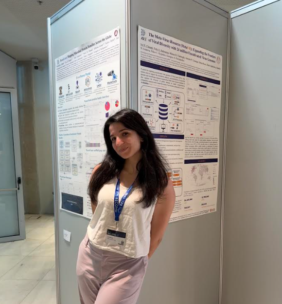
Coding my way from industry to academia.
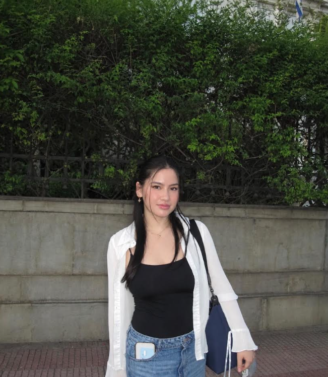
Currently in my third year of Biomedical Engineering, I’m passionate about the intersection of technology and medicine, with an eye toward the medtech sector. As I’m building my foundation, I’m eager to explore various ways engineering can transform patient care and industry outcomes.